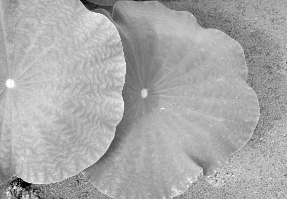
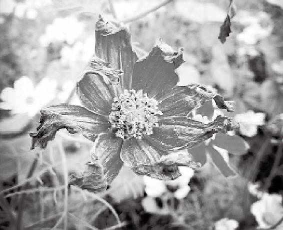
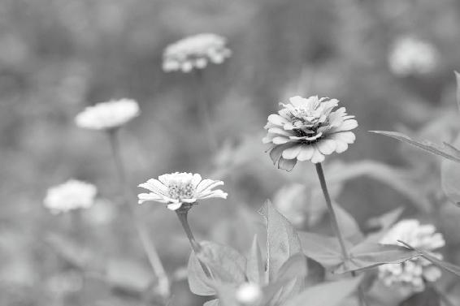
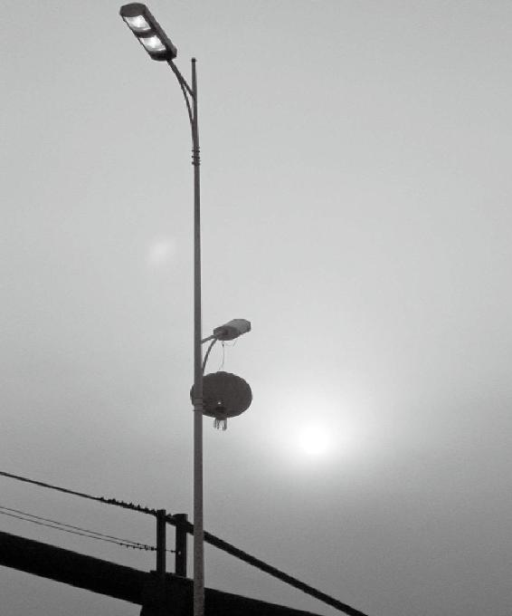

人的内臟，跟四季的变化有哪些对应关系
东方青色，和肝相对应
东方的气能影响人的肝胆功能，让人的眼睛明亮
肝藏精还是藏污，都取决于你的身体状况
对肝触动太大，人就容易受惊吓
人病发惊骇，吃点酸的东西，能帮他收一下气
肝在植物中属木，吃鸡肉可以补肝血
让你的肝气充盈，最应该吃麦子
人的肝病和木星的变化是有直接联系的
春气生发的时候，有的人会出现偏头疼
多听mi音，有利于肝胆之气生发
肝气弱的人要多用数字“三”和“八”
一个人的肝有没有问题，看筋就知道了
经文：
帝曰：五臟应四时，各有收受乎？
岐伯曰：有。东方青色，入通于肝，开窍于目，藏精于肝。其病发惊骇。其味酸，其类草木。其畜鸡。其榖（gu）麦。其应四时，上为岁星。是以春气在头也。其音角。其数八。是以知病之在筋也。其臭臊。
人的内臟，跟四季的变化有哪些对应关系
梁冬：前面，我们讲到阴阳、表里、内外、雌雄等，这些都与天之阴阳相应。接着往下讲“五臟应四时，各有收受乎”。
徐文兵：下面这段要讲人的内臟器官再细分，跟四季的变化有怎样的对应关系。“五臟应四时，各有收受乎？”什么叫“应”？应是要动心的。我们讲过和谐的 “谐”，就是共振、共鸣的意思。中医有句话叫“同声相应，同气相求”，意思是说，两个人踩到同一个步点、频率上的时候，一个人动，另一个人也会跟着动；一个人发声，另一个人也跟着发声，这叫“应”。当四季出现了变化以后，人的内在的臟腑也会跟着变化。人身是个小天地，人们都说“天人合一”，那么人和天是怎么合的这个拍子、合的这个步点呢？黄帝问了：有种说法说，五臟随着四季的变化（四季的气的变动），也在跟着变化。重点落在下一句话：“各有收受乎？”什么叫“收”？ 什么叫“受”？古人讲：男女授受不亲——一个是接受的“受”。“授”和“受”发音虽一样，但意思却不同：一个是给予，另一个是接受。两个陌生男女之间互相传递东西，给的那个人叫“授”，接的那个人叫“受”——他们是不直接发生这种授受关系，而是通过第三方，这叫授受不亲。
当四季出现了变化以后，人的内在的臟腑也会跟着变化。
两个陌生男女之间互相传递东西，给的那个人叫“授”，接的那个人叫“受”——他们是不直接发生这种授受关系，而是通过第三方，这叫授受不亲。
“各有收受乎”中一个字是“收”，收割的收；另一个字是“受”，接受的受。那么，收和受区别在哪儿呢？我经常给大家提议，当你研究汉字搞不清楚的时候，碰到“疼者痛也，痛者疼也”等分辨不清的问题时，把它翻译成英文，就能够“他山之石可以攻玉”。这样一来，你马上便会跳出汉语思维的圈子，有一种新的理解。比如说，把“收”翻译成英文，“收到了”我们可以翻译成receive。I receive a letter。 “受”可以翻译成accept。Receive the gift doesn't mean I accept it.我收到你寄来的一封求爱信，这叫“收”；我是否接受你的求爱，这叫“受”。当春天到来的时候，各个臟腑都要receive——收到了春天的信息，但谁跟它和谐共振、跳起舞来了？是肝。这就是说，“五臟皆收，唯肝受之”。
当春天到来的时候，各个臟腑都要receive——收到了春天的信息，但谁跟它和谐共振、跳起舞来了？是肝。
梁冬：别说西方人没文化，人家是分得出 “收”和“受”的。
徐文兵：黄帝问得也很深刻：“各有收受乎？”下面那话更有意思，岐伯曰：有。这就应了。
东方青色，和肝相对应
梁冬：“东方青色，入通于肝”，怎么解释？
徐文兵：岐伯开始细讲我们的五臟是怎么跟着季节的变化去“受”、去“应”的。首先讲的是——“东方色青”，这就涉及到“五臟”和“五行”了。前面，我们讲的是“阴阳”。在讲“阴阳”之前，我做了一个铺垫说：中医是门关系学，研究“人和天地之间的关系”、研究“人与人的关系”，然后研究人的内部“五臟六腑的关系”。为什么要研究关系呢？因为发现很多人身体出了问题，是把关系搞错了，或者把关系搞乱了。只要把种种关系调和了，人就健康了。讲个“田忌赛马”的故事。
很多人身体出了问题，是把关系搞错了，或者把关系搞乱了。只要把种种关系调和了，人就健康了。
春秋的时候，齐国有个大将名叫田忌，这个人跟齐王一样，喜欢赛马。赛马的规矩是各选三匹马，最快的、中等的和次等的，最快的和最快的比，中等的和中等的比，次等的和次等的比，如果赢了两组就算赢了。结果，田忌老输。后来，他请到孙膑，孙膑说：“我保证你赢。 ”田忌说：“齐王有好马，我没钱买。”孙膑说：“我不需要你换马。”他出了个主意——以弱配强，以强胜中，以中胜次。最后，田忌胜出。原因是什么？孙膑改变了马与马的关系。
中医的智慧在于：我没给你换心，也没给你换肺，我只不过发现你五臟之间哪些关系出了问题，我把关系理顺了，你自然就健康了。
中医的智慧在于：我没给你换心，也没给你换肺，我只不过发现你五臟之间哪些关系出了问题，我把关系理顺了，你自然就健康了。中医的“五行”理论第一条：归类。有一句话叫“取类比象”，“象”是什么？象者心生。这个“象”不是单立人的“像”，肉眼看不见的叫“象”。凭什么把东西归类？普通人归类的时候，靠的是肉眼看到的“形”——形状、形态、形体；肉眼看到的色——颜色。我们经常说“形形色色”，归类要靠“形”、“色”。但是，光靠肉眼归类不大准确，因为肉眼看到的往往不是真相，真相都是掩饰在有形的实体背后的东西。这个东西，在“形”和“象”中间。比如说，人要怎么分类？
梁冬：分成男人和女人。
徐文兵：怎么区分男人和女人呢？原来都是根据“形”来分类。我们都有第一性征——男人有男性生殖器，女人有女性生殖器。还有第二性征——比如说，女性的骨盆比较宽，乳房比较充盈饱满，男人有喉结。但是，发现问题了，有一届奥运会上，一个人参加女性比赛项目，按性征来看是女的，成绩却比其他女选手高得出奇。最后，通过查DNA查出来他是男人，结果组委会把他的奖牌取消了。这说明一个问题——肉眼看到的 “形”，有时候会欺骗我们，代表不了它的本质。所以，看一个人是男人，长着男人样，有男人的性征，但是他的言谈举止过于妩媚、娘娘腔，这是阳中之阴。可见，在形的后面有个气，这种气决定了一个人的行为举止和谈吐。
肉眼看到的 “形”，有时候会欺骗我们，代表不了它的本质。
在气背后呢？这就讲到了“神”。我们讲“精、气、神”——有形物质的背后，是它的气，气后面是神！比如说，有的人长得一副男人身体，却有一副女人的灵魂，就想通过变性把自己变成女人，这就是肉体和神没匹配对。那么说，一个人最本质的不是肉身。普通的人能观察到他人的举止行为，能看到他人的气，而那些有着高智慧的古代中医，看到的都是他人的神。相由心生，这个心就是神，古代的中医们通过用心去体会肉眼看到的物质——动物、植物、草木、金石，最后得出了相，然后告诉肉眼凡胎的人，这些东西的气是应的，是能够共振、共鸣的，或者说它们背后的神是一样的，这就有了“五行归类”。我们要学的就是古代这些大智慧家给我们留下的、他们用心体会到的东西：有形的物质是一荣俱荣、一损俱损，是应的。
有形的物质是一荣俱荣、一损俱损，是应的。
梁冬：哪个“应”？
徐文兵：应酬的“应”，呼应的“应”。就是说，气要是一动，和它有关的物质是全动的，如果气被某一个东西生，和它有关的物质会全生；气被某个东西克，和它有关的物质全被克，这是一类。研究关系学，第一要归类、分类，中国人把这些东西分成五行，就是五大类。五行理论的另一个核心就是研究这五类东西之间的关系，谁生谁、谁克谁。
气要是一动，和它有关的物质是全动的，如果气被某一个东西生，和它有关的物质会全生；气被某个东西克，和它有关的物质全被克，这是一类。
梁冬：在西方的统计学里面，有所谓的统计回归，透过现象去统计，找到事物之间的呼应关系。但是，我认为有意思的是中国古代的人们，他们不仅仅看到了事物之间的共同性，还找到共同性背后的根。
东方的气能影响人的肝胆功能，让人的眼睛明亮
徐文兵：我们经常讲“木、火、土、金、水”，那么，岐伯说的第一类同声相应、同气相求的东西，是出于东方，指的是以中原地区为中心的东方，就是现在山东这个方向。再往北点，辽东、东北这一带都属于东方！
“东方色青”包罗万象——颜色、植物、动物、声音、韵律、数字等。首先它讲的是我们肉眼能看到的色。山青青，水碧碧，青山绿水，青出于蓝而胜于蓝！青色，就是深绿以后趋于蓝的那种颜色。我教英文课的时候，直接就把它说成blue and green，蓝绿的混合色。其实形容这一颜色的文字有很多，青、绿、碧，碧绿的“碧”，还有翡翠——什么叫翡？什么叫翠？
“东方色青”包罗万象——颜色、植物、动物、声音、韵律、数字等。
梁冬：翡和翠有什么区别？
徐文兵：翡是偏黄的颜色，翠是偏绿的色彩。翠、绿、青、碧是一类的，都跟东方有关系。以前学校的黑板都是黑色的，现在都变成墨绿色的，后一种颜色看起来更舒服。因为青色入通于肝，开窍于目，这叫应。它一动你也跟着动，叫应，就省劲儿了。大家都知道大雁一飞都排成了人字型，为什么？头雁一扇翅膀带的波，会替后面的大雁省点儿劲。那也叫应，踩到点儿上了。中国人把东方归到一色——“青”，然后发现，东方的气起来以后，能影响到人的肝胆功能，进而能让人的眼睛更加明亮。
大家都知道大雁一飞都排成了人字型，为什么？头雁一扇翅膀带的波，会替后面的大雁省点儿劲。

青色入通于肝，开窍于目，让眼睛很舒服。
肝藏精还是藏污，都取决于你的身体状况
梁冬：什么叫“藏精于肝”呢？
徐文兵：支撑五行东方这套系统的，有物质基础，有气，也有神。物质基础在哪里？就是我们的肝。大家都吃过鲜红的、柔嫩的、里面藏着很多血的猪肝。藏精的时候，肝是生动活泼的；如果肝藏污纳垢，就变成脂肪肝、肝硬化、肝癌。所以，肝是藏精还是藏污，都取决于你的身体状况。
支撑五行东方这套系统的，有物质基础，有气，也有神。物质基础在哪里？就是我们的肝。
梁冬：所谓“人老珠黄”就是肝血不足，眼珠都变黄了。
所谓“人老珠黄”就是肝血不足，眼珠都变黄了。
徐文兵：“人老珠黄”有两种解释：一个是指眼珠，另一个是指珍珠。
梁冬，为什么是珍珠呢？
徐文兵：珍珠放时间长了就会失去光泽。

对肝触动太大，人就容易受惊吓
梁冬：“藏精于肝，其病发惊骇，其味酸”是什么意思？
徐文兵：如果对肝触动太大的话，就容易产生一个症状，什么症状？
梁冬：“其病发惊骇”——就是一惊一乍，很容易被吓到。
徐文兵：惊和骇的繁体字都是“马”字旁。马的眼睛大，但是眼睛大接受的信息能量也多，所以容易受到惊吓。“惊”是容易接受信息的意思。东方的肝胆的系统会影响到人的神经系统。神经系统受到刺激以后，容易让人产生一种震颤，容易影响到内心，出现惊骇。惊是往起窜的意思，马若受惊，前蹄子会往起一抬，后两条腿着地，这表示受惊了；骇是一种心头被阴云遮蔽的感觉，是一种特别沉重的、压迫的感觉，类似于一着急，心里一紧的那种状态。
“惊”是容易接受信息的意思；骇是一种心头被阴云遮蔽的感觉，是一种特别沉重的、压迫的感觉，类似于一着急，心里一紧的那种状态。
梁冬：所以，当你出现惊骇的时候，哪怕再害怕，也应该冷静地看看——我现在是惊了呢？还是骇了呢？当你这么思考后就没那么惊骇了。
徐文兵：不同的五臟应不同的四时、应不同的五行。“东方色青，入通于肝，开窍于目，藏精于肝，其病发惊骇”。“骇”就是那种心中乌云蔽日的感觉。
梁冬：胸闷的感觉。
人病发惊骇，吃点酸的东西，能帮他收一下气
梁冬：“其味酸”，这是什么意思呢？
徐文兵：《黄帝内经》中有很多五味（酸苦甘辛咸）跟五臟的对应关系，后世对这个理论又有进一步的发展——我们现在一般说有“十味”，对应酸的，还有涩。咱们都吃过柿子，觉得很涩，其实它是酸的极致；苦味对应的是焦，你把面包馒头烤焦了，或者成为锅巴了，那个饭焦的味是特别苦的；还有甘，我们经常说甜，或者说淡，我们喝的水叫淡水，它其实不甜，但是淡和甘归到一类；辛，对应的味道是辣，还有麻。
苦味对应的是焦，辛，对应的味道是辣，还有麻。
梁冬：辛和辣有什么区别呢？
徐文兵：辛是发散的，辣是热的。辣，就是一种火烧火燎的感觉。辛有两种可能，有辛热，有辛凉。感觉辣只想喝冰水，但是辛有辛凉的味道，比如，吃薄菏那种味道，就是辛——那是往出散的感觉，但它是凉的。
辛是发散的，辣是热的。辣，就是一种火烧火燎的感觉。辛有两种可能，有辛热，有辛凉。咸对应的是“鲜”。
咸对应的是“鲜”。比如菜里放味精，人会感觉鲜。海鲜咸，但很鲜。十个味在后世的伊尹写的《汤液经法》里面总结了一下。钱老说的《辅行诀臟腑用药法要》——被陶弘景保留下来的这本书里面，也把五味做了一个完整的归类。
伊尹是真人、厨子，什么味道入哪个经、归哪个臟？有什么作用？是补还是泄？都清清楚楚。人家他直接调的是神，通过调气来调神。所以，我们用经方，会发现它经常起到奇效，匪夷所思，为什么？这是古代通神的大医们总结出来的，他们看到了事物背后的联系。比如，现在中医开方子，病人一说头疼，给他加点川芎；病人一说消化不好，给他弄点焦三仙……
“其味酸”，就是讲怎么去对应肝气。入肝的药有两种作用，一是让肝更加强，另外就是让它稍微平衡一下。春天的味道对于肝来讲，是让肝稍微收敛一下。我们经常说，涩酸主收敛。当人有病发惊骇的时候，其实是肝气发散太过了。一惊一吓，人就容易哆嗦、抽筋，这时候吃点酸的东西，能够帮他收一下气。比如，给他吃点李子，喝口醋，能平静一下。
“其味酸”，就是讲怎么去对应肝气。一惊一吓，人就容易哆嗦、抽筋，这时候吃点酸的东西，能够帮他收一下气。
肝在植物中属木，吃鸡肉可以补肝血
梁冬：“其类草木”作何解释？
徐文兵：我们把自然界的植物简单分类，草、木对应肝。
梁冬：除了草木还有什么？
徐文兵：还有蕨类、真菌、苔藓，还有孢子植物、蘑菇、灵芝。
梁冬：“其畜鸡”是什么意思？
徐文兵：草木是指植物，对应的动物就是五畜。我们说“五畜为益，五谷为养”。东方是日出的地方，呼应日出最早的动物是鸡，鸡叫得最早。吃鸡肉入肝经，补肝血。女人产后，通常会炖一只鸡吃。因为女人在顺产的时候，也会出很多血，这些血都是肝血，怎么让她的肝气肝血补得旺一点儿？可以炖只鸡。
因为女人在顺产的时候，也会出很多血，这些血都是肝血，怎么让她的肝气肝血补得旺一点儿？可以炖只鸡。
但是鸡肉吃多了也不好，现代人老吃鸡，不分自己的身体寒热虚实，不管自己的肝气是虚还是实，结果导致营养过盛。而且鸡肉吃多了容易引起小孩子多动症，发病惊骇，整天不是挤眉、就是弄眼儿，抠抠这个、动动那个。我给一个多动症的小朋友做过调治，调理他的脾胃和肝胆功能。过了一段时间，他来复诊，他的奶奶高兴地跟我说：徐大夫，这孩子的指甲长了十一年，终于长出了一毫米。为什么？多动症的孩子喜欢咬指甲，没事儿就咬自己的指甲。他把十个指头的指甲，咬得齐齐整整的，永远不让它长出来，把它扼杀在萌芽状态。东方主生发，但是他把这个“咔”掉了。这个多动症的小孩，经过我的调治后，老师也表扬了他，说这孩子上课注意力集中了，学习成绩也好了。
鸡肉吃多了容易引起小孩子多动症，发病惊骇，整天不是挤眉、就是弄眼儿，抠抠这个、动动那个。
肝火旺、好动，有抽搐病的人，要少吃鸡肉
徐文兵：很多小孩子白天吃鸡肉，晚上就睡觉不安稳，有的家长说：孩子睡觉时在床上打把式。
打把式是什么？用北京话说练武的人叫打把式。孩子睡着以后打把式，在床上翻来滚去，是一种梦中多动。这就是营养过盛，肝气、肝血太旺的表现。这种情况，就要少给孩子吃鸡肉了。
红叶老师曾调治好许多小孩子病，也调治过很多妇科病。他发现，好多女性不是不来例假，而是例假经常提前，甚至一个月来两次例假。这都是肝气肝血太旺了，如果这样的人还天天吃老母鸡、吃烤鸡，再加上麻辣鸡丁、宫保鸡丁，就是无知无觉。
好多女性不是不来例假，而是例假经常提前，甚至一个月来两次例假。这都是肝气肝血太旺了，如果这样的人还天天吃老母鸡、吃烤鸡，再加上麻辣鸡丁、宫保鸡丁，就是无知无觉。
梁冬：我觉得偶尔有点倦怠的人吃点鸡还是好的，可以兴奋一下。
徐文兵：现在流行一种失眠病，不是睡不着，而是睡到半夜两三点钟以后，睁开眼睛，满脑子破事儿，然后怎么也睡不着。这种人不能吃鸡肉。因为所有的动物中，鸡醒得最早。有些人半夜两三点后总是醒来，就是因为鸡肉吃多了，余毒未清，所以早早就睁开一双迷茫的大眼睛。
有些人半夜两三点后总是醒来，就是因为鸡肉吃多了，余毒未清，所以早早就睁开一双迷茫的大眼睛。
梁冬：除了鸡以外，其他的各种雀类，斑鸠、鸱鸪，算不算鸡类呢？
徐文兵：所有的飞禽中，不沾水的都算鸡类。比如说，古代人用麻雀来壮阳的，鼓舞的就是肝气。
所有的飞禽中，不沾水的都算鸡类。
梁冬：有一次，我去广西桂林看到有人吃烧烤，一个烤串上有8只麻雀，还撒上辣椒面，真生猛啊！
徐文兵：猛到流鼻血。
梁冬：为什么越小的东西越猛呢？
徐文兵：麻雀虽小，五臟俱全。中医看东西不看个头，认为浓缩的都是精华。一个傻大个儿，但一肚子草包，没用。五谷里最有营养价值的是小米——很小的一个东西，包含那么多信息和能量。
五谷里最有营养价值的是小米——很小的一个东西，包含那么多信息和能量。
梁冬：前面讲到，禽类分成两种，沾水的和不沾水的，不沾水的是比较亢奋的，沾水的鸭子就偏寒了。
徐文兵：对，鸭肉偏寒。
梁冬：所以，炖鸭和炖鸡效果就不一样。
徐文兵：炖鸭汤是滋阴的，炖鸡汤是补肝血的，有点壮阳气的作用。鹌鹑、麻雀、鸽子、鸡都属于飞禽类，都能鼓舞肝气。过分补肝气造成的火归到心。所以，我调治一些抑郁症病人的时候，就让他们去南方待一阵子。抑郁症的人怕去北方，冬天凉了他就不舒服了，到了南方好一点儿。另外，多吃这些血肉有情之品。炖点儿鸡，或者是炖点儿麻雀、鸽子、鹌鹑。抑郁症患者原来觉着生活没意思，吃完这些先补肝血、再补心血，他们就会觉得天又蓝了、水又绿了、女孩又漂亮了，早晨又听见鸟叫了——其实鸟天天都在叫，只是他们听不见！
抑郁症的人怕去北方，冬天凉了他就不舒服了，到了南方好一点儿。另外，多吃这些血肉有情之品。
让你的肝气充盈，最应该吃麦子
梁冬：“其榖麦”。现在很多年轻朋友五谷不分，到底五谷指的是什么？
徐文兵：我们先讲“谷”，所谓“谷”是指植物的种子。我们都知道，神农氏尝百草，首先是尝出了可供我们经常食用的五谷。所以，《黄帝内经》的理论叫“五谷为养”。先说毒药攻邪，有邪气才用药，没有邪气不要用。五谷为养，五谷又对应五臟。如果你五臟的功能有不同的缺损或者病害的时候，应该选择与其相应的谷去吃——想让你的肝气充盈旺盛，眼睛明亮的话，最应该吃的五谷就是麦子。麦子磨成粉，就叫面粉。
想让你的肝气充盈旺盛，眼睛明亮的话，最应该吃的五谷就是麦子。
为什么补肝气需要吃麦子呢？麦子是五谷里面返青最早的。麦子是冬天播种，春天第一个返青，一般地到夏天就要收割。中国南北不一样，山西大同那儿，一般到阳历八月份才收割。从南到北，从安徽到河南，好多人都开着收割机沿着南往北走，一路收割下来。
麦是夏天熟，返青最早，东方色青，入于肝。另外，麦还有一个特点，我们经常讲“针尖对麦芒”——这个麦芒特别尖锐，生发力量特别强的植物，一般都带点刺儿。中药里面用的皂角刺、玫瑰花，也是疏通肝血的，都带刺儿。麦芒也带刺儿，肝气虚、肝血弱的人，要吃白面。换句话说，如果你肝气肝血都挺足的，甚至有点肝火旺，这时候再吃白面，就是相当于吃毒药。我调治过一位肝硬化腹水的病人，她的孩子很孝敬，整天给她做最好的白面馒头吃。以前，中国人吃饭，特别是道家吃麦子，吃的叫全麦饭，相当于俄国人吃的黑面包——把麦子的麸皮留着，一块儿磨成粉。任何植物种子，它的表皮都对它的种子有一种相反的作用。比如吃荔枝肉，吃得上火了、发烧了，鼻子出血了，怎么办呢？把荔枝壳煮水，一喝，立刻就好了。所以，吃全麦饭是阴阳和合的。现在的人为了好看，非要把麦子那层黄色的皮剥掉。另外，为了使白面筋道，把一个好麦子肢解成几部分，就留下胚乳、胚芽，号称是把最有营养的那部分给人吃，其实是把最毒的那部分给人吃。为什么说它最毒呢？因为没有其他制约了，它鼓舞肝气肝血的能量特别大。所以越吃这种精米白面，人病得越厉害。所以，我建议大家去吃点那种蒸出来看着颜色不是太白的，甚至有点黑的面食，或者亲自去磨点麦子吃。
生发力量特别强的植物，一般都带点刺儿。
如果你肝气肝血都挺足的，甚至有点肝火旺，这时候再吃白面，就是相当于吃毒药。
把一个好麦子肢解成几部分，就留下胚乳、胚芽，号称是把最有营养的那部分给人吃，其实是把最毒的那部分给人吃。
梁冬：到哪儿去买这种全麦呢？
徐文兵：农村有，跟农贸市场的人订购也可以。现在的中国人富了，有钱了，下一步该往贵上走了。贵就是讲品味。我有一位朋友，给我送了一袋面，我用它揪点面片儿吃。为什么揪面片呢？这种带麸皮的面粘合性不好，不好擀，所以我揪面片吃。用这种全麦的面煮出来的汤带有很浓的麦香。现在很多无良的商贩为了让面粉增重，为了让面粉显得白，在里面加东西，比如，滑石粉、增白剂、漂白剂等。说出来都让人觉得可怕。
我们现在吃的东西，都不知道是什么感觉、什么味道。举个例子，原来吃西瓜，它的味道是很清甜的。另外，吃完以后，人会一泡一泡地撒尿。现在吃西瓜，不利尿了，而是出汗。
梁冬：什么原因呢？
徐文兵：里面肯定加了那种不是往下走而是往上窜的东西。
梁冬：所以它长得快，瓤还红。
徐文兵：我们吃的太多东西都是“伪”的——有些人非要跟天地对着干。
我们吃的太多东西都是“伪”的——有些人非要跟天地对着干。
我前面说过，调治过一位肝硬化腹水的病人，她本身出现了黄疸，一看就是肝经有了毒热，伸出舌头也是血红的。她的孩子还特孝敬，给她吃精米白面。但我就不让她吃小麦。我说，你这个病已经是朽木、枯木了（肝是木），如果再浇上油、烧上火，就坚持不了几天了。后来，我让她吃荞麦。荞麦的性质正好跟麦子相反，是寒性的，它能够清解热毒。所以，我让那个孝敬的孩子做荞麦饭给母亲吃。另外，把荞麦面粉拿温水和好了，贴在他母亲的肝区——和一团湿面，贴到肝区，干了以后再揭下来，这一过程就可以把肝里的热毒解掉。否则,再那么吃，就活活会把人吃死。
梁冬：所以，道德这种事情，一定要符合天道。不懂天道，你做事情有时会适得其反。天地不仁，自有规律。你合乎天道，就是好；不合乎天道就是坏。
徐文兵：所以，古代有句话说：“为人父母者不知医为不慈，为人子女者不知医为不孝”。
人的肝病和木星的变化是有直接联系的
梁冬：“其应四时，上为岁星”，作何解释？
徐文兵：这句话谈到肝应和的四季。首先，它对应着岁星——其实就是我们说的木星。所以，古代天文学记载说岁在什么什么方位，那个岁就是指木星。古人用心去体会宇宙自然，能体会到木星的运行方位角度对地球上的生物的影响。除了日月以外，其他的五大行星对人、对地球上的生物都有影响，所以人的肝病和木星的变化是有直接联系的。
除了日月以外，其他的五大行星对人、对地球上的生物都有影响，所以人的肝病和木星的变化是有直接联系的。
梁冬：所以，在传说中诸葛孔明能够夜观天象。
春气生发的时候，有的人会出现偏头疼
梁冬：“是以春气在头也”，该作何解释？
徐文兵：这又应了我们前面说的那句话——“春天容易得病，病在颈项”。春病在头，春气生发的时候，很多人的肝气肝血就会鼓舞起来往上走。这时候，有的人会出现偏头疼，剧烈头疼；有的人会出现脑出血或脑溢血；有的人的眼睛会红肿热疼；有些人还会不由自主地眼皮跳或者惊厥、抽搐。这都是应着春气的表现。
春病在头，春气生发的时候，很多人的肝气肝血就会鼓舞起来往上走。
梁冬：如果你已经有头疼的情况了，还被派去上海出差、还要被劝酒、还要吃鸡肉，这简直就是摸着电门跳楼——双重死法。

多听mi音，有利于肝胆之气生发
梁冬：“其音角”，很多人都知道“宫、商、角、徵、羽”吧。
徐文兵：古代叫五音，当你用乐器奏出某一调子的时候，会引起人体相应器官的共鸣。
梁冬：“宫、商、角、徵、羽”是不同的音，不同的音会鼓舞人身体不同的部位。那这个“角”是什么音呢，会鼓舞人的哪里呢？
徐文兵：我们说“吹响了战斗的号角”，在发起战斗进攻的时候，吹的是号角——其实就是动物格斗用的犄角。人没有犄角，但我们有指甲。小孩子患上多动症会咬指头；女人打架，挠人用指甲。所以，攻击的时候、生发的时候吹的这个音，我们叫“号角”。角、徵、宫、商、羽”应该念作“角jue、徵zhi、宫gang、商shang、羽yu”。
“宫、商、角、徵、羽”是不同的音，不同的音会鼓舞人身体不同的部位。
梁冬：角，对应的是mi。
徐文兵：mi这个音，可能有利于肝胆之气生发。如果你最近情绪很郁闷的话，就要多听以mi为主的音乐。比如说，我们吃饭的时候，要讲脾胃，脾胃对应的调叫“宫”调，古代有一套系统就是干什么事的时候奏什么乐，这叫“应”；但是又怕应得太过了，冲杀之后还有个鸣金收兵。鸣金收兵就是对应肺的那个秋天的收敛、肃杀之气。
中医学问里的“望闻问切”，其中的“闻”，就是听这个人说话，什么音多、什么音少，然后判断出这个人臟腑的虚实寒热。这是一门很大的学问，但是现在濒临失传。我知道的一些大夫，他不像我必须得见人号脉，望闻问切。人家是打电话，你打电话，他听你说一段话，然后方子就开出来了，他靠闻，听你说话的语音、语调，包括语气，甚至是从你说话的一些内容来判断。祥林嫂一说话，全是抱怨：“我们家阿毛活着的话就这么大了……”一看这人心气极虚，靠“闻”来诊病，这是一门功夫。还有的人，诊断是一种功夫，调治又是一种功夫，你有什么病，我就建议你听一些什么样的音乐。但后世，其实到孔子那会儿这个音律已经乱了，全变成了靡靡之音——亡国之音了，所以古人说，听这个国家奏的乐就知道这个国家要完蛋。“商女不知亡国恨，隔江犹唱后庭花”。
中医学问里的“望闻问切”，其中的“闻”，就是听这个人说话，什么音多、什么音少，然后判断出这个人臟腑的虚实寒热。
肝气弱的人要多用数字“三”和“八”
梁冬：和东方或者木相对应的音乐是mi，也是角，宫商角徵羽的角。它有一个数字——“其数八”。
徐文兵：《上古天真论》讲了“法于阴阳，和于术数”，哪个数对人好，哪个数对人不好。所谓“和于术数”就是说，当我肝气太旺的时候，我就找克肝的数去中和、平衡；当肝气弱的时候，我去找生发肝的数鼓舞一下肝气。
所谓“和于术数”就是说，当我肝气太旺的时候，我就找克肝的数去中和、平衡。当肝气弱的时候，我去找生发肝的数鼓舞一下肝气。
古人将象和数对应，这个象就是不带“亻”那个“象”。用心去感应数跟东、南、西、北以及植物和动物产生的共鸣。术数学问出自伏羲，是一个极端抽象的学问。古代的典故《河图》、《洛书》中，说的就是这方面的学问。“其数八”是河图，我看你拿了一本书，上面有黑点，有白点，就代表了河图。它把东、南、西、北、中五个方位平均分配。东方，甲乙木对应的数是“八”。还有一个数——“三”。你那本书上有那个黑点和白点，就加个“三”和“五”。其实这是河图的学问，基本上就是东边对“三”和“八”。
简单说一下，东方河图上画的这个符号可能是根据星象定下来的——“三”和“八”在东面，南面是“二”和“七”，西边是“九”和“四”，北边是“六”和“一”，中间是“五”和“〇”。它画的不是“〇”，是“十”。所以说，肝气弱的人多用“三”和“八”，肝火和肝气太旺的人最好不用这个数，可以用克它的那个数：“九”和“四”，平和一下。
肝气弱的人多用“三”和“八”，肝火和肝气太旺的人最好不用这个数，可以用克它的那个数：“九”和“四”，平和一下。
梁冬：用它生发的那个数把它泻掉，这样可不可以呢？
徐文兵：这也是一种方法，我们说“实则泻其子，虚则补其母”。这在五行理论里面有。
梁冬：你讲到这个地方，其实带出来一个很重要的内容叫“全息宇宙理论”。
徐文兵：中国人从来就把它看为一体的。
梁冬：东方和相对应的时间、数字、颜色全都是一体的，后面就是同气。
东方和相对应的时间、数字、颜色全都是一体的，后面就是同气。
徐文兵：鸡、草木、麦子都是一个系列的，就是说一旦“三”和“八”鼓舞起来，这类东西就都起来了，反之则一下就都弱了——一荣俱荣，一损俱损。

东方和相对应的时间、数字、颜色全都是一体的，一荣俱荣，一损俱损。
一个人的肝有没有问题，看筋就知道了
梁冬：“知病之在筋也，其臭臊”，那个“臭”读chou还是xiu呢？
徐文兵：xiu。
梁冬：“是以知病之在筋也”，就是说如果一个人的肝出现问题，可以看筋。
徐文兵：肝主筋。肌腱，就是连接附着在骨骼上的肌腱、韧带,包括神经纤维，都属于筋。肝气太过的话，筋就会一直动，人会不由自主地抽搐，或者多动；肝气虚的话，筋就不能动；如果宗筋不能动，就是阳痿。
肝气太过的话，筋就会一直动，人会不由自主地抽搐，或者多动。肝气虚的话，筋就不能动。如果宗筋不能动，就是阳痿。
宗筋——繁殖后代的那根筋，代指男性性功能。曾有一个人问我，说他们的孩子是近视眼，能不能调治？其实近视眼是屈光不正，也是筋出了问题，可以调一下肝。
真正补益人肝胆的肉是有点膻味的
梁冬：“其臭臊”，什么意思？
徐文兵：臭是指气味,就是“自大加一点”的“臭” （chou），臭味相投的“臭”。臭有两种发音，另一个是xiu，嗅觉的“嗅”,就是一个“口”字加一个“臭”字。舌头上尝的那个味儿，叫酸、苦、甘、辛、咸。另外，鼻子闻到的味儿也会影响到我们内在的臟腑。
“臊”，有的版本写的是“膻”。膻和臊，是什么意思呢?知道臊狐狸吗？其实就是人有狐臭。肉吃多了，肉毒太重的人有这个味。尿臊味，就是人体排出去那种肉毒和热毒的味道。我更倾向于把它写成“其臭膻”，为什么？吃草的牛羊，包括骆驼的肉都有一种膻味。那些吃肉的动物，比如老虎、狮子、猫等，身上带着一种臊味。臊和膻是不一样的。吃草木多了，身上会带着膻味，然后吃草木的这些动物又被老虎吃了，木生火，就变成了臊味。
现在很多人吃羊肉不愿意吃到那股膻味，怎么办？他们就吃羊羔肉，羊羔还没来得及吃草，还在吃奶，就没有膻味。其实，真正补益人肝胆的还是有点膻味的肉。
梁冬：前面讲到了“五臟应四时”，其中讲到东方与青色的关系，就是说，一系列的东西都是有呼应关系的，只要和木有关。
徐文兵：是应的！这本书不知不觉地已经把方位的概念、季节的概念、植物动物的概念、数学的概念、音律的概念给你灌输进去了。
这本书不知不觉地已经把方位的概念、季节的概念、植物动物的概念、数学的概念、音律的概念给你灌输进去了。
梁冬：我觉得有趣的地方就在于，原来它是全息统一场，动物居然跟植物、数字对应。比如，对应木的是“三”、“八”这两个数字，真的是很深刻。
徐文兵：我们学辩证唯物主义会学到事物的普遍联系、变化发展，事物之间到底有哪根线牵儿着呢？有什么普遍联系呢？几千年前的《黄帝内经》就已经告诉我们了。